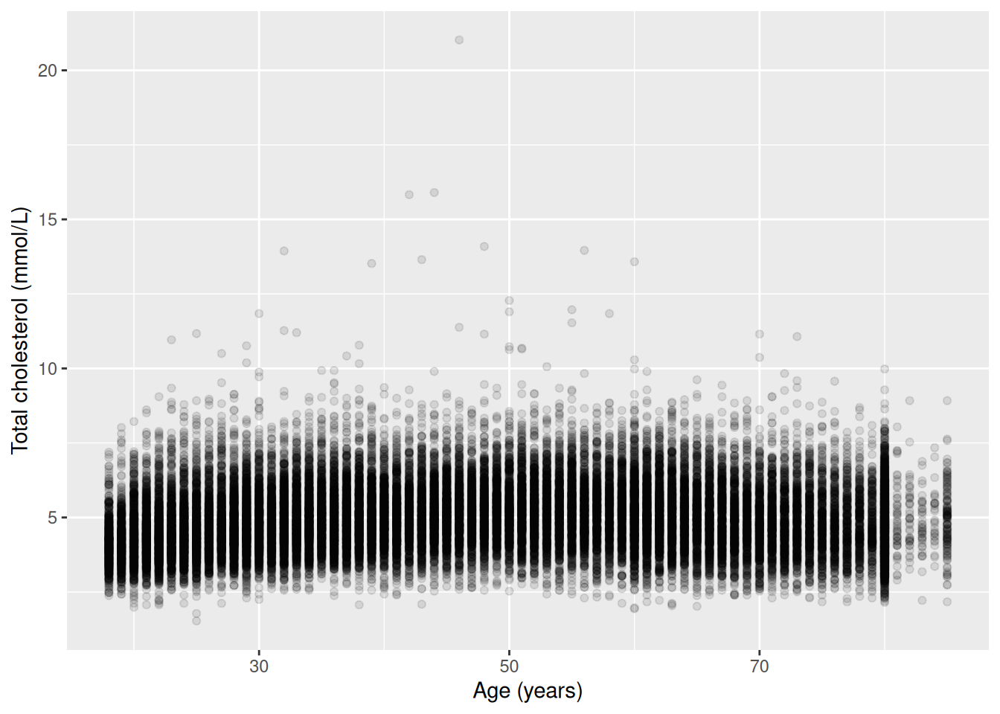
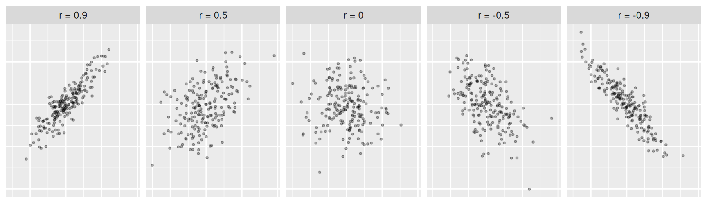
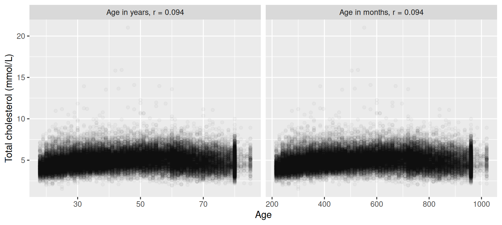
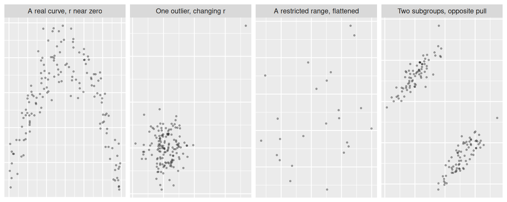
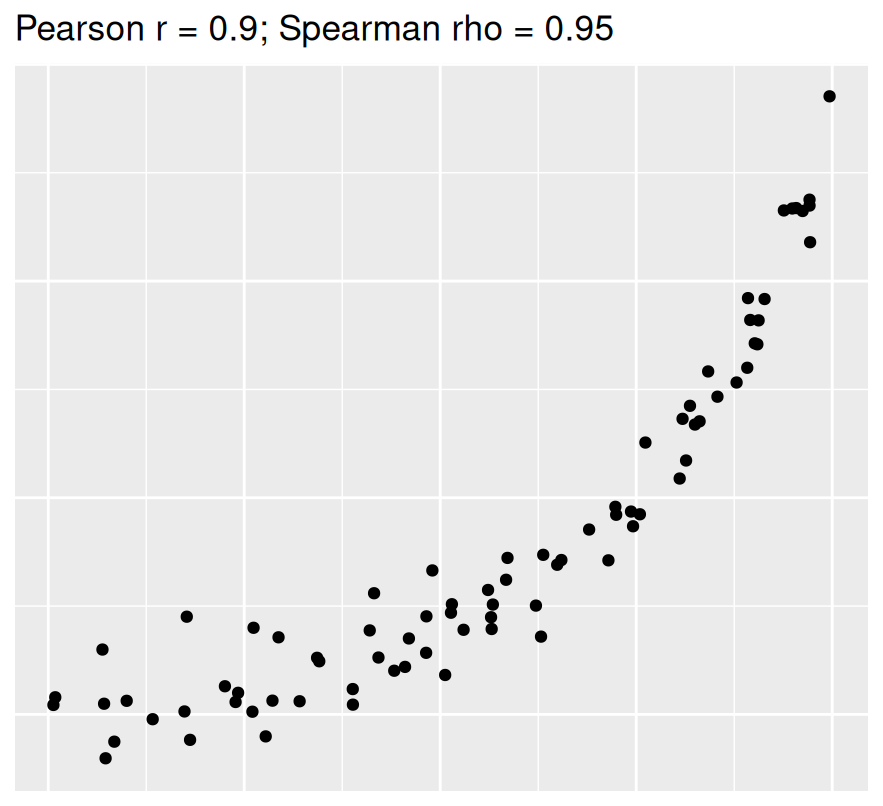
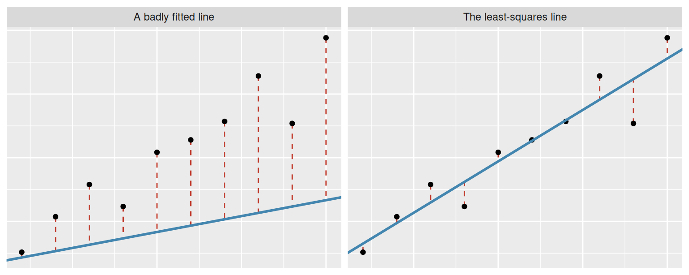
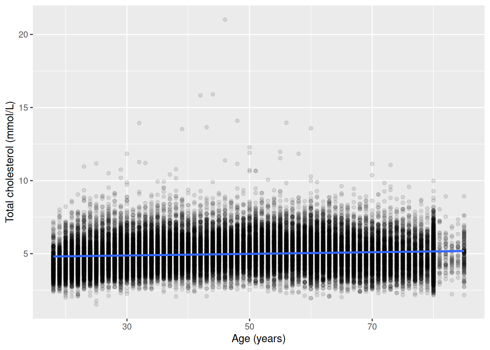
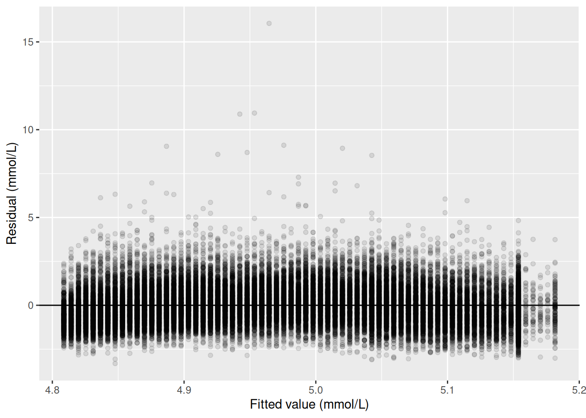
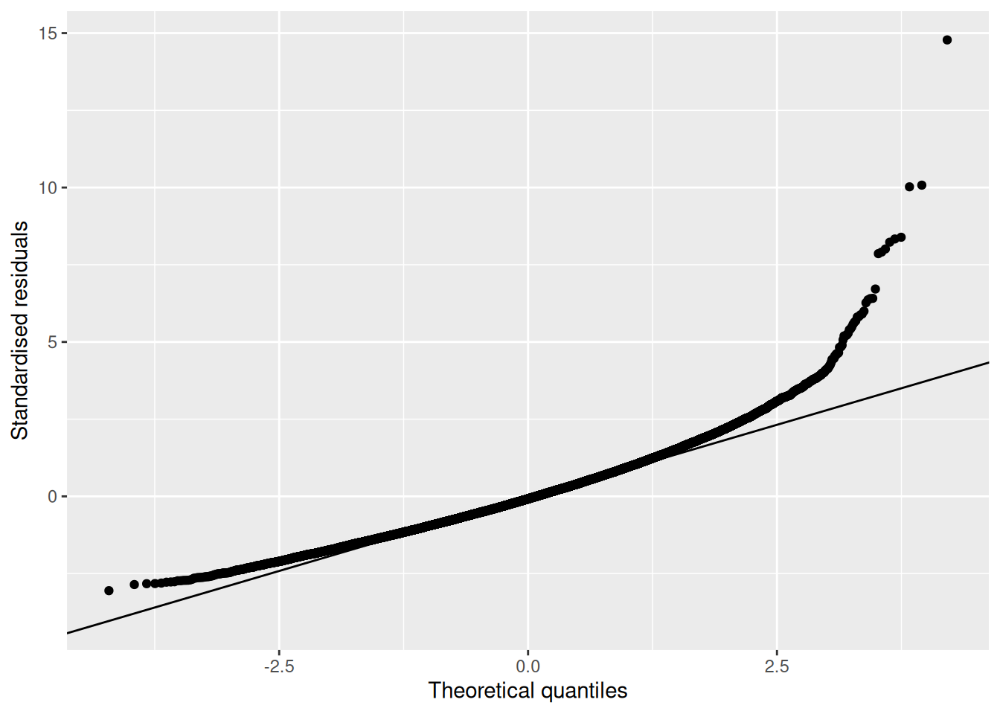

Correlation and simple linear regression
Week 10
Fred Ho
What you have learnt so far
- Stats, Week 9. We learnt t-tests for comparing a continuous variable between groups, and the chi-squared test for two categorical variables. But what if we want to examine the association between two continuous variables, e.g. cholesterol and age?
- Epi, Week 1. Exposure and outcome as hypothetical causes and the health state of interest. How can we model them statistically?
- Epi, Week 4. Correlation is not causation was mentioned but what exactly is ‘correlation’?
By the end of this session, you will be able to
- Select an appropriate correlation measure and interpret the findings
- Apply the simple linear regression model, and assess its assumptions using residual diagnostics
- Interpret the intercept and slope with confidence intervals and p-values
- Use a fitted model for prediction, and explain the danger of extrapolation
Block 1: correlation
There are no two groups here
- We can compare two groups. Last week’s exposure was gender, a two-category label
- This week’s exposures are age and sedentary time, both are continuous
- We can’t apply t-test with these as exposure
- But the question is still the same one we’ve been asking all term: does the outcome differ, and by how much, as the exposure changes
Visualising two continuous variables at once
- Boxplot and histogram to examine distribution of a continuous variable by groups
- Scatterplot is for two continuous variables
- One point per participant, one variable on each axis
- The first plot of two continuous variables together
- The cloud slopes gently upward and is wide
Pearson’s correlation coefficient, r
- The scatterplot seems to follow a straight line going upward. But it is too noisy to be sure
- Pearson’s correlation coefficient (r) measures the strength of a straight-line association between two continuous variables
- Its range is minus 1 to plus 1, with 0 meaning no linear association. The null value for a test on r is 0
- Neither variable is treated as the outcome: r is symmetric
- r = Σ(x − x̄)(y − ȳ) / √[Σ(x − x̄)² · Σ(y − ȳ)²]
- Each variable enters only through its own distance from its own mean, divided by its own spread
- That’s why r carries no units
Age and cholesterol: what is r?
| Quantity | Estimate | 95% CI | p |
|---|---|---|---|
| Pearson r, age and total cholesterol | 0.094 | 0.084 to 0.104 | < 0.001 |
- H0: r is 0, i.e., no linear association between age and cholesterol
- H1: r is not 0
- Age and total cholesterol were positively correlated (r = 0.094, 95% CI 0.084 to 0.104, p < 0.001)
- The association is non-zero but weak, matching the wide, gently sloping cloud in the scatterplot
What different values of r look like

r does not depend on the units
- Same participants, same cholesterol: only the unit of age changes
- r is identical for age in years and age in months
- This is why r often can be compared across studies
- But also why r can’t answer ‘how much cholesterol changes per year of age’

When r misleads

- Four ways a linear coefficient hides or invents a relationship
- All four can be identified from a scatterplot, which is why we always plot the data first
This week’s methodological anchor
- Bland and Altman (1994), BMJ: ‘Correlation, regression, and repeated data’
- Their worked case: five subjects, each measured five times
- Taking the mean of each subject before calculating the correlation gives r of -0.67 (p = 0.22)
- Pooling all 25 data points before calculating the correlation gives r of -0.47 (p = 0.02)
- Pooling manufactured a significant result out of data that didn’t have one
- This is the independence assumption behind every test in this course
- The paired t-test meets it by analysing one difference per person
Correlation for ordinal variables
- Pearson’s r assumes both variables sit on a scale where equal steps mean the same thing throughout
- For age, the difference between 30 and 29 is the same as that between 60 and 59: 1 year
- An ordinal variable doesn’t: the step from ‘no symptoms’ to ‘mild symptoms’ isn’t the same size as the step from ‘mild symptoms’ to ‘possible depression’
- Spearman’s rho is Pearson’s r computed on the ranks of the observations instead of their raw values
- It needs the observations put in order
- It also handles a relationship that’s consistently increasing or decreasing without being a straight line

Is age associated with depression symptom category?
| Quantity | Estimate | 95% CI | p |
|---|---|---|---|
| Age and depression symptom category, Spearman rho | 0.005 | not available | 0.37 |
- Rho is close to zero, and the p-value is far from significant: no clear ordered relationship in this sample
- No CI accompanies it. Rho has no simple formula for one
Try it: Pearson or Spearman?
| Pair | Variable 1 | Variable 2 |
|---|---|---|
| A | Age (years) | Total cholesterol (mmol/L) |
| B | Sedentary time (hours/day) | Total cholesterol (mmol/L) |
| C | Age group (20-30, 31-40, 41-50) | Depression score, PHQ-2 (0 to 6) |
| D | Education (less than high school, high school graduate, above high school) | Depression symptom category |
- For each pair, would we report Pearson’s r or Spearman’s rho?
- What in the variables decides it?
- Three minutes
Try it: the answer
| Pair | Variable 1 | Variable 2 | Measure |
|---|---|---|---|
| A | Age (years) | Total cholesterol (mmol/L) | Pearson’s r |
| B | Sedentary time (hours/day) | Total cholesterol (mmol/L) | Pearson’s r |
| C | Age group (20-30, 31-40, 41-50) | Depression score, PHQ-2 (0 to 6) | Spearman’s rho |
| D | Education (less than high school, high school graduate, above high school) | Depression symptom category | Spearman’s rho |
- Pair A and pair B still need a scatterplot first, since r only measures a straight-line association
What a correlation cannot tell us
- The coefficient for age and cholesterol was 0.094
- It says the two move together weakly, but doesn’t say:
- whether age is the cause or the other way round (an epi question)
- how much cholesterol differs between a 40 year old and a 60 year old (a stats question)
Block 2: simple linear regression and diagnostics
The response and the explanatory variable
- When we are asking questions like ‘how much cholesterol differs between a 40 year old and a 60 year old’, we are often making implicit assumptions about what we want to explain:
- Cholesterol is the response, the variable being explained
- Age is the explanatory variable, the one doing the explaining
- Mapping the terminology from epi: the outcome is the response, the exposure is the explanatory variable
Try it: name the response
| Study | Question |
|---|---|
| 1 | Does blood pressure vary by daily salt intake? |
| 2 | Would hours of revision affect exam score? |
| 3 | Is cigarettes smoked per day in pregnancy a risk factor for birth weight? |
| 4 | Does cholesterol become higher with older age? |
- For each study, which variable is the response, and what in the question decides it?
- Three minutes
Try it: the answer
| Study | Question | Response | Explanatory variable |
|---|---|---|---|
| 1 | Does blood pressure vary by daily salt intake? | Blood pressure | Daily salt intake |
| 2 | Would hours of revision affect exam score? | Exam score | Hours of revision |
| 3 | Is cigarettes smoked per day in pregnancy a risk factor for birth weight? | Birth weight | Cigarettes smoked per day |
| 4 | Does cholesterol become higher with older age? | Cholesterol | Age |
- The response is the variable the question wants explained
- The explanatory variable is the one that could plausibly have come first
- Study 4’s complication is why it’s included: age can’t be explained by cholesterol, so the direction is obvious there. Nothing in the arithmetic would have objected to fitting it the other way round
A regression model to answer these questions
- All these questions can be answered using a simple linear regression:
- Y = α + βX + ε
- Y: the response
- α: the intercept
- β: the slope
- X: the explanatory variable
- ε: the error the line doesn’t capture
- X and Y are observed (the data)
- α and β are model coefficients to be estimated
- The assumptions ε carries come later
Fitting the line: least squares

- Ideally we want to estimate α and β so that the error is minimised
- We can’t because error is unobserved. We don’t know the population regression line.
- Instead we target the next best thing: the residual, the vertical distance between the estimated regression line and the data
- Least squares picks the one line that makes the sum of the squared residuals smallest
- Vertical, not horizontal: the line is fitted to explain the response (vertical axis), so it’s the response’s own errors that get minimised
Finding the line by hand
- Drag the sliders to change the line, and watch the sum of squared residuals rise and fall
- Every line has a total squared error, and exactly one line makes it smallest
How much does cholesterol differ per year of age?
| Quantity | Estimate | 95% CI | p |
|---|---|---|---|
| Intercept, cholesterol at age zero, mmol/L | 4.70900 | 4.679 to 4.738 | < 0.001 |
| Slope, per year of age, mmol/L | 0.00557 | 0.00498 to 0.00615 | < 0.001 |
- Let’s focus on the slope first, because it shows whether, and to which extent, cholesterol changes with age:
- H0: the slope of cholesterol on age is zero, i.e., cholesterol doesn’t vary with age
- H1: the slope is not zero, i.e., cholesterol varies with age
- Total cholesterol was on average 0.0056 mmol/L higher for each additional year of age (95% CI 0.005 to 0.0061 mmol/L, p < 0.001)
Reading the slope
| Quantity | Estimate | 95% CI | p |
|---|---|---|---|
| Intercept, cholesterol at age zero, mmol/L | 4.70900 | 4.679 to 4.738 | < 0.001 |
| Slope, per year of age, mmol/L | 0.00557 | 0.00498 to 0.00615 | < 0.001 |
- The slope is the difference in mean cholesterol associated with one additional year of age, in mmol/L per year
- Across the twenty years between 40 and 60 that’s about 0.11 mmol/L, the answer a correlation coefficient could never give
- We say ‘associated with’, not ‘causes’ because we can’t be sure it is causal
Reading the intercept
| Quantity | Estimate | 95% CI | p |
|---|---|---|---|
| Intercept, cholesterol at age zero, mmol/L | 4.70900 | 4.679 to 4.738 | < 0.001 |
| Slope, per year of age, mmol/L | 0.00557 | 0.00498 to 0.00615 | < 0.001 |
- The intercept is the model’s fitted value where the explanatory variable is zero: here, 4.71 mmol/L at age zero
- Nobody in this survey is a newborn, so this intercept is a mathematical anchor that minimises the residuals, not something we want to interpret
- The intercept becomes a real, interpretable number as soon as the explanatory variable is a set of categories, coming up shortly
The fitted line on the data
- The least-squares line for cholesterol on age, drawn over the scatterplot from Block 1
- The shaded band is a 95% CI for the line, drawn as a band instead of two numbers
- The band is narrow because n is large
- The points still scatter widely around it indicating age per se doesn’t explain much of the variation in cholesterol

The full output
Call:
lm(formula = chol ~ age, data = age_complete)
Residuals:
Min 1Q Median 3Q Max
-3.3177 -0.7469 -0.0877 0.6401 16.0554
Coefficients:
Estimate Std. Error t value Pr(>|t|)
(Intercept) 4.7085437 0.0151970 309.83 <2e-16 ***
age 0.0055658 0.0002979 18.68 <2e-16 ***
---
Signif. codes: 0 '***' 0.001 '**' 0.01 '*' 0.05 '.' 0.1 ' ' 1
Residual standard error: 1.086 on 39174 degrees of freedom
Multiple R-squared: 0.008832, Adjusted R-squared: 0.008807
F-statistic: 349.1 on 1 and 39174 DF, p-value: < 2.2e-16- R prints all of this at once. The coefficient tables on earlier slides are taken from this printout
What else the output carries
- Three quantities sit alongside the coefficients, in the last lines of the printout (R squared has its own slide next):
Residual standard error: 1.086 on 39174 degrees of freedom
Multiple R-squared: 0.008832, Adjusted R-squared: 0.008807
F-statistic: 349.1 on 1 and 39174 DF, p-value: < 2.2e-16- The residual standard error: the typical size of a residual, in the response’s units. Here, 1.09 mmol/L. It describes how far the points sit from the line, not how precise the line is
- The F-statistic tests the model as a whole. With one explanatory variable, that’s the same question the slope’s own test already answers. It is more useful when we have more explanatory variables in the model
Multiple R-squared
- Multiple R-squared is the proportion of the response’s total variation the model accounts for, from 0 to 1
- R² = 1 − (residual sum of squares / total sum of squares)
- With one explanatory variable, R squared is exactly the square of Pearson’s r, and hence the name
- We report it because it answers a different question from the slope’s p-value: not whether the association is real, but how much of the response the model explains
Cholesterol and age: R squared is under 1%
- R squared is 0.0088: age accounts for under 1% of the variation in cholesterol between participants
- Set that against the slope’s p-value, well below 0.001, on the same model
- An association can be real, precisely estimated, and still leave almost all of the response unexplained
- A low R squared doesn’t mean there’s no association, only that age alone explains little of the variation
Can we trust the regression line?
- Fitting the regression line is very easy (you can do it in Excel), but interpreting it and judging whether it’s reliable is harder
- It would still fit if the relationship were curved, if the scatter widened as age rose, or if the same people had been measured several times
- Nothing in the output distinguishes those cases from a well-behaved one, so the check has to be made deliberately
What the model assumes
- Linearity: a straight line is the right shape
- Constant variance: the scatter doesn’t widen along the line
- Normally distributed errors: we don’t know the true errors but can look at the residuals
- Independence between observations: a property of how the data were collected, not something we can show from a plot or a test
Residuals against fitted values
- Plotting each residual against its fitted value checks linearity and constant variance together
- An even band around zero, with no curve and no change in spread from left to right, is what a well-behaved model looks like
Cholesterol and age: residuals against fitted
- Most points sit in an even band around zero
- There’s no visible trend
- The spread also looks constant along the fitted line
- A small group of participants with very high cholesterol sit well above it
- They can be genuine outliers, e.g., someone whose disease puts them well outside the population norm

The QQ plot
- The standardised residuals, plotted against what a normal distribution would have produced, with a reference line
- Points on the line are consistent with normally distributed residuals
- A systematic departure from it is not
Cholesterol and age: the QQ plot
- The middle of the distribution sits close to the line. The upper tail pulls away: the same high-cholesterol participants again
- With 39,176 participants, the estimates hold up despite it because of the CLT. In a small sample, this same picture would be a real concern
- Taken together, the checks suggest the findings are reasonably reliable

Block 3: a categorical explanatory variable
When the explanatory variable has categories
- A simple linear regression describes how a continuous response varies with a continuous explanatory variable
- What if the explanatory variable is categorical?
- The simplest case: a binary variable
- Same as the coin flip example, we will need to convert the categories to 0 and 1:
- The ‘reference category’ (the category to compare with) becomes 0
- The ‘active category’ becomes 1
- The intercept becomes the mean of the reference
- The slope becomes the difference of active minus reference
Does cholesterol differ between men and women?
| Quantity | Estimate | 95% CI | p |
|---|---|---|---|
| Intercept, mean cholesterol in men, mmol/L | 4.886 | 4.87 to 4.901 | < 0.001 |
| Slope for women, mmol/L | 0.169 | 0.147 to 0.19 | < 0.001 |
- H0: mean total cholesterol is the same in men and women
- H1: it differs
- Mean total cholesterol was 0.17 mmol/L higher in women than in men (95% CI 0.15 to 0.19 mmol/L, p < 0.001)
This is a replication of the t-test
- Week 9 reported this exact comparison: 0.17 mmol/L higher in women, 95% CI 0.15 to 0.19 mmol/L
- The two agree to several decimal places here, because the two groups happen to have nearly the same spread
- The two procedures aren’t identical, though: a t-test’s default doesn’t assume the groups share a spread, and a regression does
- In practice the two answers rarely differ materially
When the explanatory variable has three categories
- A regression model also handles an explanatory variable with more than two categories
- Say for a three-category variable:
- The ‘reference category’ (the category to compare with) is 0 on every indicator
- The first ‘active category’ gets a 0/1 indicator (also known as dummy variable)
- Each further ‘active category’ gets its own 0/1 indicator
- All comparisons were made against the reference
Does cholesterol differ by education?
| Quantity | Estimate | 95% CI | p |
|---|---|---|---|
| Intercept, mean cholesterol, 'less than high school', mmol/L | 5.005 | 4.983 to 5.026 | n/a |
| Slope for 'High school graduate', mmol/L | -0.016 | -0.047 to 0.016 | 0.330 |
| Slope for 'Above high school', mmol/L | -0.012 | -0.039 to 0.014 | 0.363 |
- H0: a non-reference category’s mean cholesterol equals the reference category’s
- H1: it differs
- Neither contrast is anywhere near significant. On this evidence, education isn’t associated with cholesterol in this sample
Changing the reference
- A reference category is arbitrary and decided based on the research question and framing
- It changes the numbers because the comparison changes, but the fit stays the same. Changing the reference doesn’t provide more information
- R squared (2.99e-05, both parameterisations) and the residual standard error don’t move at all
Try it: read the education table
| Quantity | Estimate | 95% CI | p |
|---|---|---|---|
| Intercept, mean cholesterol, 'less than high school', mmol/L | 5.005 | 4.983 to 5.026 | n/a |
| Slope for 'High school graduate', mmol/L | -0.016 | -0.047 to 0.016 | 0.330 |
| Slope for 'Above high school', mmol/L | -0.012 | -0.039 to 0.014 | 0.363 |
- Which education category is the reference, and how can you tell from the table alone?
- What’s the model’s estimated mean cholesterol for a participant in each of the three categories?
- What would happen to the coefficients, and to R squared, if ‘above high school’ were made the reference instead?
- Three minutes
Try it: the answer
| Quantity | Estimate | 95% CI | p |
|---|---|---|---|
| Intercept, mean cholesterol, 'less than high school', mmol/L | 5.005 | 4.983 to 5.026 | n/a |
| Slope for 'High school graduate', mmol/L | -0.016 | -0.047 to 0.016 | 0.330 |
| Slope for 'Above high school', mmol/L | -0.012 | -0.039 to 0.014 | 0.363 |
- The reference is the one category without a row of its own: ‘less than high school’, mean 5.005 mmol/L
- The other two are the intercept plus their own contrasts: 4.989 mmol/L and 4.992 mmol/L
- The rows would become contrasts against ‘above high school’, while R squared stayed the same, because the fit is the same fit
Block 4: prediction
Using the model to predict
- ‘Predict’ is used loosely here. We are not really predicting what would happen in the future
- Instead, we are interpolating or extrapolating
- Consider a toy example with 3 data points: cholesterol readings from people aged 30, 50, and 70
- Interpolation is to use the regression model to estimate the average cholesterol for 31, 40 and 60 year olds even if our data don’t include these exact ages
- Extrapolation is to use the regression model to estimate the average cholesterol for 29 and 75 year olds
Confidence and prediction intervals
- Put a value of the explanatory variable into the fitted regression line, and it returns a fitted value for the response, with a CI round it
- That CI describes the precision of the predicted mean, not of a single individual
- A prediction interval, a different quantity from a CI, describes the precision for an individual. It’s always wider, since predicting one person is less certain than predicting the average across many
- In public health we mostly report the CI, not the prediction interval
- A prediction interval could in theory be useful in precision medicine, but it is usually too wide to be useful
Predicted mean cholesterol at age 45
- The fitted regression line: cholesterol = α + β × age
- Substituting the estimates: 4.709 + 0.00557 × 45
- The slope term: 0.00557 × 45 = 0.25
- Adding the intercept: 4.709 + 0.25 = 4.96 mmol/L
- With a 95% CI of 4.95 to 4.97 mmol/L
- Age 45 sits comfortably inside the range this model was fitted on, 18 to 85 years, so the data support this answer
Try it: predict at age 150
| Quantity | Value |
|---|---|
| Intercept, mmol/L | 4.709 |
| Slope, mmol/L per year | 0.00557 |
| Observed age range, years | 18 to 85 |
- Work out the predicted mean cholesterol for a person aged 150
- Do you believe the answer, and what in the model would have warned you?
- Three minutes
Try it: the answer
- 4.709 plus 0.00557 times 150 gives 5.54 mmol/L, with a CI for the mean of 5.48 to 5.6 mmol/L
- That’s an entirely ordinary cholesterol reading, next to a narrow CI. Nothing in the output looks wrong
- The model holds no information about anyone over 85, and answers anyway
- The only check is the one we make, on the input, against the range the model was fitted on
Gentamicin clearance in babies: how much per kilogram?
| Quantity | Estimate | 95% CI | p |
|---|---|---|---|
| Intercept, l/h | -0.027 | -0.047 to -0.008 | 0.008 |
| Slope, per kg of weight, l/h | 0.074 | 0.066 to 0.082 | < 0.001 |
- Gentamicin is an antibiotic given for serious infections in newborns, and the kidneys clear it, so the safe dose depends on the baby’s clearance
- Gentamicin clearance (l/h) regressed on weight (kg), 31 babies. R squared 0.926
- For a 3 kg baby, the predicted clearance is 0.195 l/h, and the dose follows from it
A 300 g baby: an impossible prediction
- What about a very preterm baby born at 25 weeks, weighing only 300 g?
- The same formula for a 300 g baby returns a clearance of -0.005 l/h
- A negative clearance is physically impossible
- This relates to the linear regression model assuming the response variable to change linearly with the explanatory variable
- Likely this is also an extrapolation
Is sedentary time associated with cholesterol?
| Quantity | Estimate | 95% CI | p |
|---|---|---|---|
| Slope, cholesterol per hour/day of sedentary time, mmol/L | -0.001 | -0.0021 to 1e-04 | 0.073 |
- The slope is close to zero, and small next to its own 95% CI
- The CI includes zero, so these data are consistent with no association. R squared is essentially zero
- Cholesterol varies with age, and sedentary time might too
- Is age a confounder? Can we deal with it in the regression model?
- Next week answers that question
Application: write the sentence
Two numbers, no interpretation
| Quantity | Estimate | 95% CI | p |
|---|---|---|---|
| BMI, per additional hour/day of sleep, kg/m² | -0.46 | -0.69 to -0.24 | < 0.001 |
- Potter, Cade and Hardie (2017), PLOS ONE: sleep duration and BMI in 1,615 UK adults, adjusted for age, ethnicity, sex, smoking, and socioeconomic status
- In pairs: write one sentence interpreting this coefficient in context and in its units, and one sentence stating what the model assumes
- Five minutes
The sentences, and what the authors wrote
- BMI was on average 0.46 kg/m² lower for each additional hour/day of sleep (95% CI 0.69 to 0.24 kg/m² lower, p < 0.001), after adjustment for age, ethnicity, sex, smoking, and socioeconomic status
- The model assumes linearity, constant variance, normally distributed residuals, and independence between participants
- The authors’ own sentence: ‘participants had 0.46 kg/m2 lower BMI values (95% CI -0.69 to -0.24 kg/m2, p < 0.001) per additional hour of sleep’
- Also an accurate description
Key points, and what the lab does
- A correlation coefficient says how strongly two continuous variables move together, but not by what amount
- A regression slope quantifies the amount, in the units of the response per unit of the explanatory variable, with a CI and a p-value
- Which variable is the response is an epidemiological assumption, not a statistical question
- A regression model is only valid if assumptions are reasonably met, and prediction is only reliable if we avoid extrapolation
- The lab fits every one of these models in R